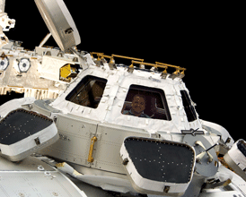

国際宇宙ステーション(ISS)の窓から見える地球の姿を、プロジェクターを使って簡単に再現できるアプリです。

このプログラムは、ISSの最新の軌道要素を元に計算した現在のISSの飛行位置から、キューポラ（ISSの観望窓）を通して見える地球の姿を、リアルタイムに表示しています。JavaScriptで書かれた、Webブラウザだけで動かすことができるプログラムです。
Co-Cupolaのすべては GNU General Public License v3に準じて、 GitHubで公開しています。
Co-Cupolaでは、以下の情報ソース、ライブラリ、APIを利用させて頂きました。
ISSの最新の軌道要素：
NASA HumanSpaceFlight Realtime Data
軌道要素から現在地の計算：
Orb.js
地球画像の表示：
Google Maps Javascript API version 2.0
International Space Apps Challenge Tokyo 2012/4/21-22
Hiroshi Inukai/ Direction
Takuya Shimada/ Program
Shin'ichiro Suzuki/ Program
Masafumi Shirado/ Program
Sayuri Nagayoshi/ Illustration
Yoshihiro Mita/ Hardware Design
Sohei Sato/ Hardware Design
Hiroshi Obayashi/ Web Site / Slide Direction
cocupola[at]gmail.com